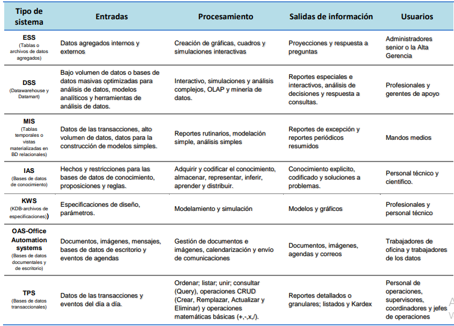

Ayudan a los directores a enfrentar y resolver aspectos estratégicos y tendencias a largo plazo, tanto en la empresa como en el entorno
externo. Su función principal es compaginar los cambios del entorno externo con la capacidad organizacional existente.
Suelen desarrollarse dentro de la organización “In house”, por lo tanto no se adaptan fácilmente a paquetes disponibles en el mercado.
Apoyan en el proceso de innovación de productos y procesos dentro de la empresa.
Su forma de desarrollo es a base de incrementos y a través de su evolución dentro de la organización. Se inicia con un proceso o función
en particular y a partir de ahí se agregan nuevas funciones o procesos.
Cambian significativamente el desempeño de un negocio al medirse por uno o más indicadores clave, entre ellos, la magnitud del impacto.
Generan cambios fundamentales en la forma de dirigir una compañía, interactuar con clientes y proveedores y competir
Su función es lograr ventajas que los competidores no posean, tales como ventajas en costos y servicios diferenciados con clientes y
proveedores
Sistemas de nivel administrativo
Sirven a las actividades de supervisión, control, toma de decisiones, y administrativas de los gerentes de nivel medio. Por lo general, este tipo de sistemas
proporcionan informes periódicos en lugar de información instantánea de operaciones. Apoyan a las decisiones no rutinarias y tienden a enfocarse en
decisiones menos estructuradas para las cuales los requisitos de información no siempre son claros.
Ayudar en el proceso de planeación como una herramienta en el desarrollo de estrategias para dar ventajas competitivas a la empresa.
Apoyar las actividades de supervisión, control, toma de decisiones y administración de la gerencia intermedia.
Dar soporte en la toma de decisiones de los altos mandos administrativos mediante la retroalimentación de la información recabada a los ESS.
Respuestas a informes periódicos a solicitud.
Información generada mediante extracción y manipulación de datos empresariales
Suministra información sobre el desempeño de la organización
Sistemas de nivel de conocimiento
Apoyan a los trabajadores del conocimiento y de datos de una organización. El propósito de estos sistemas es ayudar a las empresas comerciales a integrar el
nuevo conocimiento en los negocios y ayudar a la organización a controlar el flujo del trabajo de oficina. Identificar o clasificar nuestros activos de conocimiento
y a llevar los procesos de su gestión de una manera más efectiva, todas las habilidades y los conocimientos deben de ser identificados y valorados, accesibles
desde cualquier sitio, deben ser capturados o almacenados, para que a su vez se puedan desarrollar y mejorar. Se reconocen las siguientes tipos: KWS, Sistemas de automatización de la oficina (OAS) y técnicas inteligentes o Sistemas de Inteligencia Artificial (IAS).
Están entre las aplicaciones de crecimiento más rápidas en los negocios actuales.
Los OAS y las Estaciones de trabajo (Workstation) de diseño, investigación y financieras entre otras Integran los conocimientos en el conjunto de la
organización y canalizan los flujos de información asociados a puestos intensivos en información. Los OAS son diseñados para aumentar la productividad de
los trabajadores de datos en la oficina, apoyando las actividades de coordinación y comunicación. Programan actividades. Comunican. Además coordinan a
diversos trabajadores de información, unidades geográficas y áreas funcionales. Manejan y controlan documentos.
Utilizan las denominadas técnicas inteligentes para la captura y codificación del conocimiento no explicitado
Sistemas de nivel operativo
Apoyan a los gerentes operativos en el seguimiento de actividades y transacciones elementales de la organización como ventas, ingresos, depósito en efectivo, nómina, decisiones de crédito y flujo de materiales e insumos.
El propósito principal de los sistemas en este nivel es responder las preguntas rutinarias y dar seguimiento al flujo de transacciones en la organización.
Ahorros significativos de mano de obra, debido a que automatizan tareas operativas de la organización y reducen los tiempos de ejecución.
Apoyan las tareas a nivel operativo de la organización, tratan con procesos de rutina bien estructurados e incluyen aplicaciones para el mantenimiento de registros.
Son intensivos en entrada y salida de información; sus cálculos y procesos suelen ser simples y poco sofisticados.
Son fáciles de justificar ante la dirección general, debido a que sus beneficios son visibles y palpables
Sistemas de soporte a las decisiones
Sistema interactivo basado en computadora, el cual utiliza modelos y datos para resolver problemas no estructurados para apoyar a los tomadores de decisión.
Brinda soporte a los decisores sin tratar de remplazarlos
Apunta hacia la eficacia-efectividad (capacidad de lograr de metas deseadas) más que hacia la eficiencia(optimizar recursos para alcanzar las metas)
Es interactivo y amigable al usuario
Proporciona soporte a todos los niveles administrativos
Información generada mediante modelación analítica de los datos empresariales
Estos son los sistemas de informacion por niveles

Creada el 13 de mayo de 2024
por Dana Juliana David Diaz.